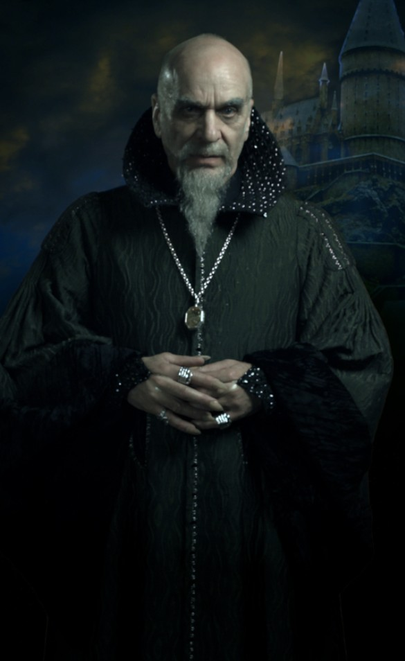

The Four Houses of Hogwarts
Gryffindor

Gryffindor is one of the four Houses of Hogwarts School of Witchcraft and Wizardry, founded by
Godric Gryffindor. Godric instructed the sorting hat to choose a few particular characteristics he most
values. Such character traits of students Sorted into Gryffindor are courage, chivalry, and determination.
The emblematic animal is a lion, and its colours are scarlet and gold.Sir Nicholas de Mimsy-Porpington,
also known as "Nearly Headless Nick" is the house ghost.Gryffindor corresponds roughly to the element of
fire, and it is for that reason that the colours scarlet and gold were chosen to represent the House. The colour
of fire corresponds to that of a lion as well, with scarlet representing the mane and tail and gold representing the
coat.
Hufflepuff
Hufflepuff is one of the four Houses of Hogwarts School of Witchcraft and Wizardry. Its founder was the
medieval witch Helga Hufflepuff. Hufflepuff is the most inclusive among the four houses; valuing hard work,
dedication, patience, loyalty, and fair play rather than a particular aptitude in its members. The emblematic
animal is a badger, and yellow and black are its colours. The Head of Hufflepuff is Pomona Sprout and the Fat
Friar is the House's patron ghost.Hufflepuff corresponds roughly to the element of earth,and it is for that reason that the House colours were
chosen: yellow represented wheat, while black was emblematic of soil.[4] The Hufflepuff points hourglass contains
yellow diamonds. Students sorted into Hufflepuff often demonstrate exceptional abilities in Herbology, owing
to their correspondence to earth.
Ravenclaw

Ravenclaw is one of the four Houses of Hogwarts School of Witchcraft and Wizardry, founded by Rowena
Ravenclaw. Members of this house are characterised by their wit, learning, and wisdom. Its house colours are blue
and bronze, and its symbol is an eagle. The house ghost, who in life was the daughter of the house's founder
Rowena Ravenclaw, is the Grey Lady. Ravenclaw corresponds roughly to the element of air; the House
colours blue and bronze were chosen to represent the sky and eagle feathers respectively, both having much to do
with air.
Slytherin

Slytherin is one of the four Houses at Hogwarts School of Witchcraft and Wizardry, founded by Salazar
Slytherin. Salazar instructed the sorting hat to choose a few particular characteristics he most valued. Such
character traits are cunning, resourcefulness, and ambition (during the time period the books and films take
place in, this house is mostly of pure-blood pure-blood supremacy, due to his mistrust of Muggle-borns, but
this discrimination does not last). Its emblematic animal is a snake and its colours are green and silver. The Head
of Slytherin is Horace Slughorn (who left the role to Severus Snape for fifteen years before taking it up again in
1996) and the House's patron ghost is the Bloody Baron.Slytherin corresponds roughly with the element of
water due to serpents being commonly associated with the sea and lochs in western European mythology, as
well as serpents being physically fluid and flexible animals. The colours also correspond with waters around